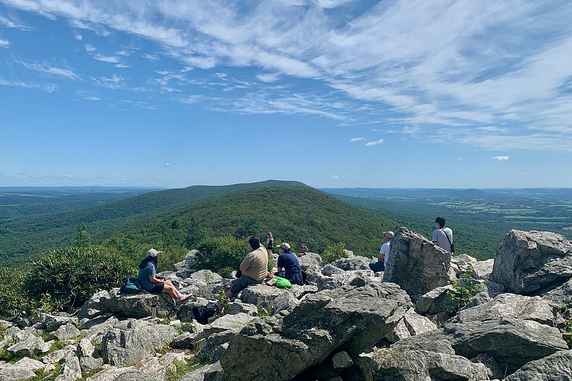
Hawk Mountain Bed & Breakfast
Kempton, PA · A country lodge in the Blue Mountain valley, near Hawk Mountain Sanctuary and hiking trails. Country breakfast is served in the commons room.
Visit Hawk Mountain B&B →A selection of inviting inns for a weekend away, from the Lehigh Valley and Poconos to Bucks County, Lancaster, Gettysburg, the Hudson Valley and the Jersey Shore.
These selections are within roughly 150 miles of Bethlehem, Pennsylvania in straight-line distance; driving distances and times will be longer. Check the inn’s website for current availability, rates, breakfast, accessibility and policies. Photos show the property where noted and otherwise a nearby destination.

Kempton, PA · A country lodge in the Blue Mountain valley, near Hawk Mountain Sanctuary and hiking trails. Country breakfast is served in the commons room.
Visit Hawk Mountain B&B →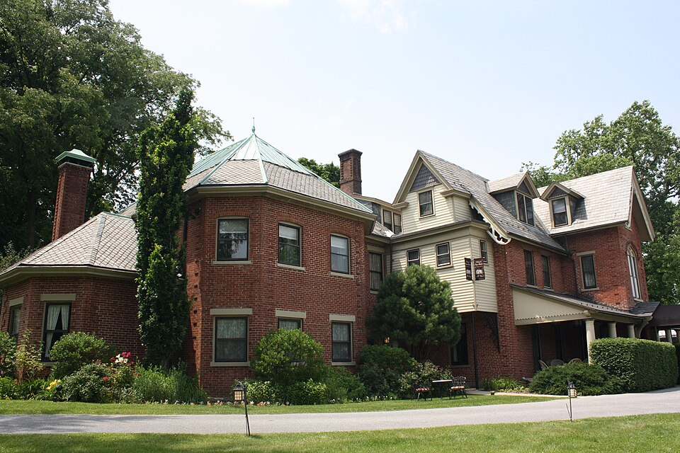
Bethlehem, PA · An 1858 mansion with historic rooms and a location close to Bethlehem’s shops, galleries and restaurants.
Visit The Sayre Mansion →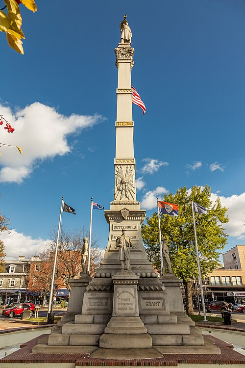
Easton, PA · A restored Georgian mansion on College Hill, near Lafayette College and downtown Easton, with a porch and gardens.
Visit The Lafayette Inn →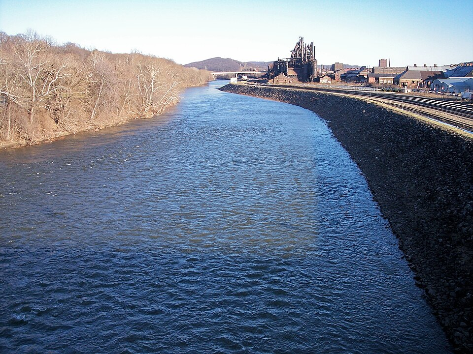
Bethlehem, PA · A two-suite lodge-style B&B along the Lehigh River corridor, with a wraparound porch, fireplaces and a full homemade breakfast. The innkeepers note a two-night minimum.
Visit Rustic Dreams →
Jim Thorpe, PA · A boutique bed and breakfast close to the historic downtown and outdoor recreation in the Pocono Mountains.
Visit The Flagstaff Lodge →
Stroudsburg, PA · An adults-only Poconos bed and breakfast in the hills near Stroudsburg, with a cooked breakfast and individually appointed rooms.
Visit Cherry Valley Manor →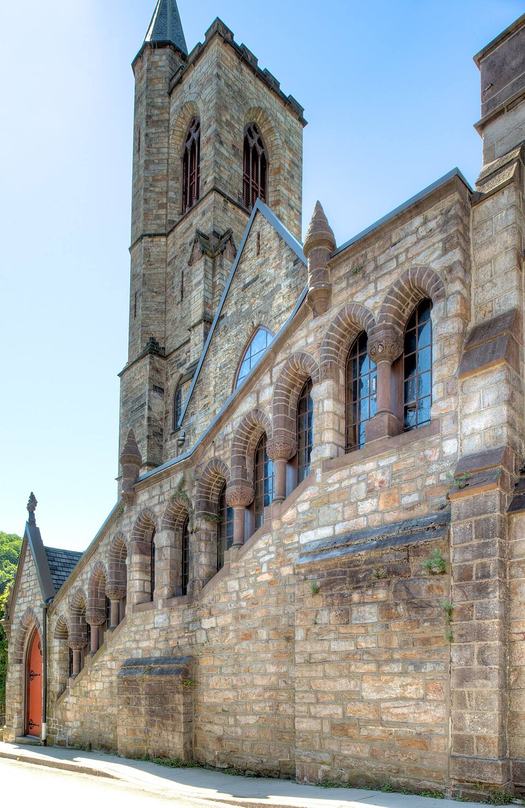
Jim Thorpe, PA · Guest rooms in a historic town setting, with mountain and river views and gardens. A handy base for exploring Jim Thorpe on foot.
Visit Hillcrest Bed and Breakfast →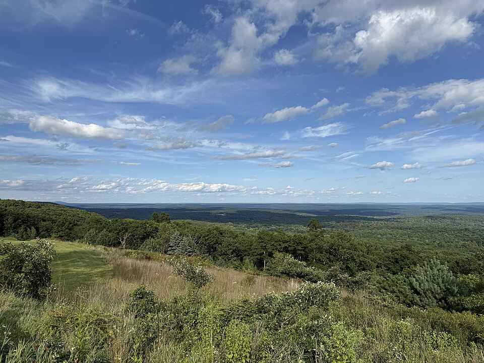
Canadensis, PA · A Pocono country inn with guest rooms in its manor house and a daily breakfast. Check the inn’s site for current dining and lodging details.
Visit Brookview Manor Inn →
New Hope, PA · A historic stone manor on landscaped grounds, within walking distance of New Hope’s shops and restaurants.
Visit Fox & Hound →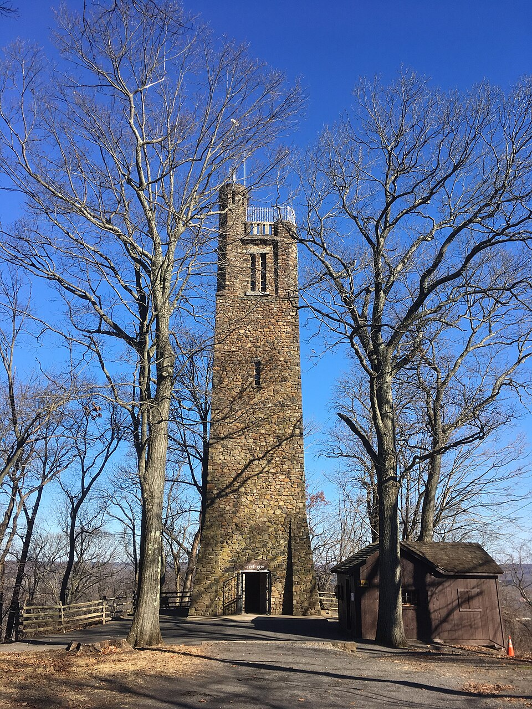
New Hope, PA · A couples’ getaway on a private estate with gardens and cooked-to-order breakfast.
Visit The Inn at Bowman’s Hill →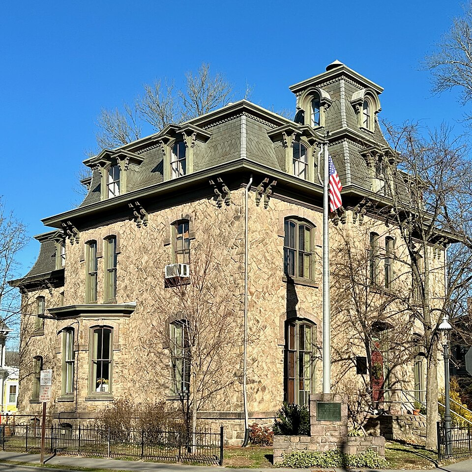
Stockton, NJ · A countryside inn near Lambertville and New Hope, with gardens, cottages and a country breakfast.
Visit Woolverton Inn →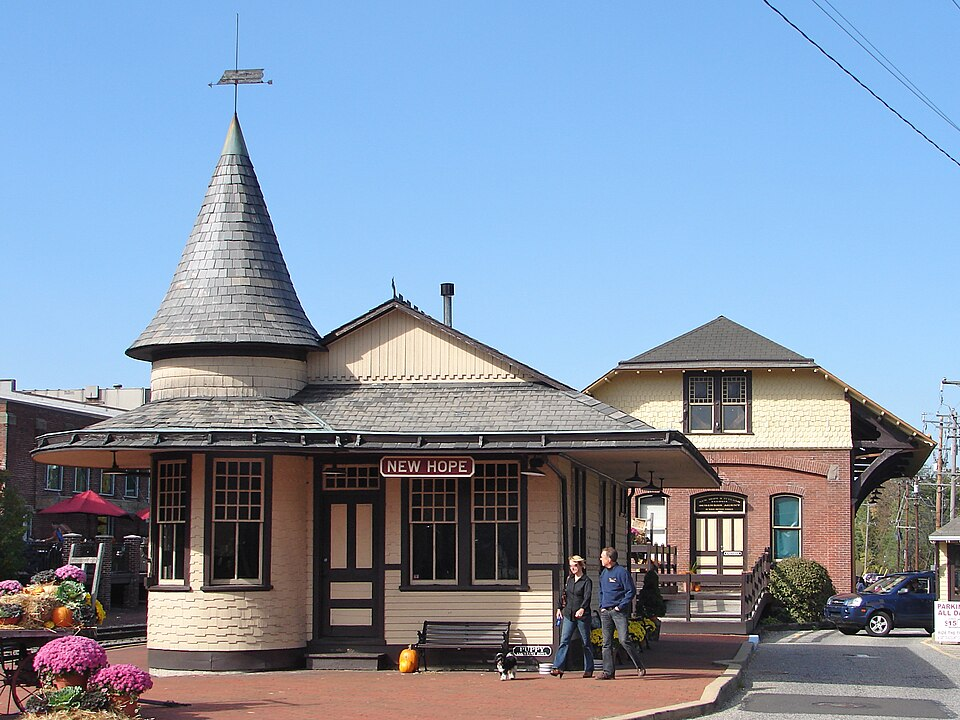
Holicong, PA · A Bucks County country estate established in 1740, with guest suites, gardens and gourmet dining on the property.
Visit The Inn at Barley Sheaf Farm →
Lancaster, PA · A 1912 Dutch Colonial inn with gardens, convenient for exploring Lancaster City and the surrounding countryside.
Visit The Lancaster B&B →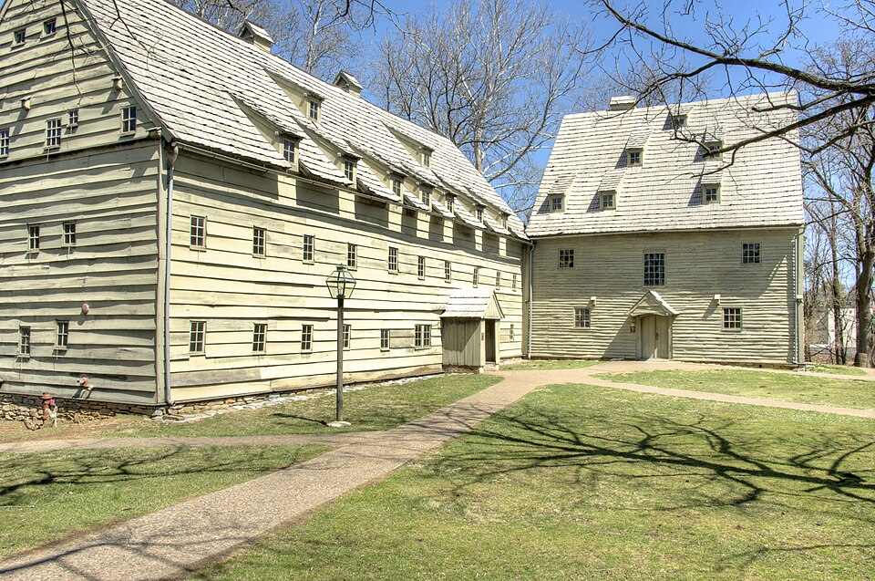
Ephrata, PA · A historic Lancaster County inn with nine guest rooms and suites; several include fireplaces, and each has a private ensuite bath.
Visit Historic Smithton Inn →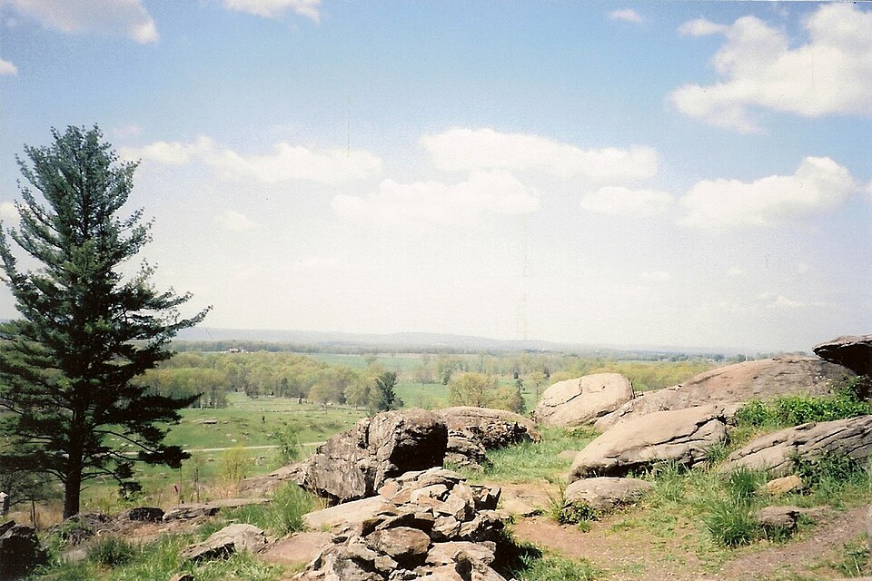
Gettysburg, PA · Historic guest rooms in the heart of town, with a garden patio and continental breakfast; a convenient base for the battlefield and museums.
Visit Brickhouse Inn →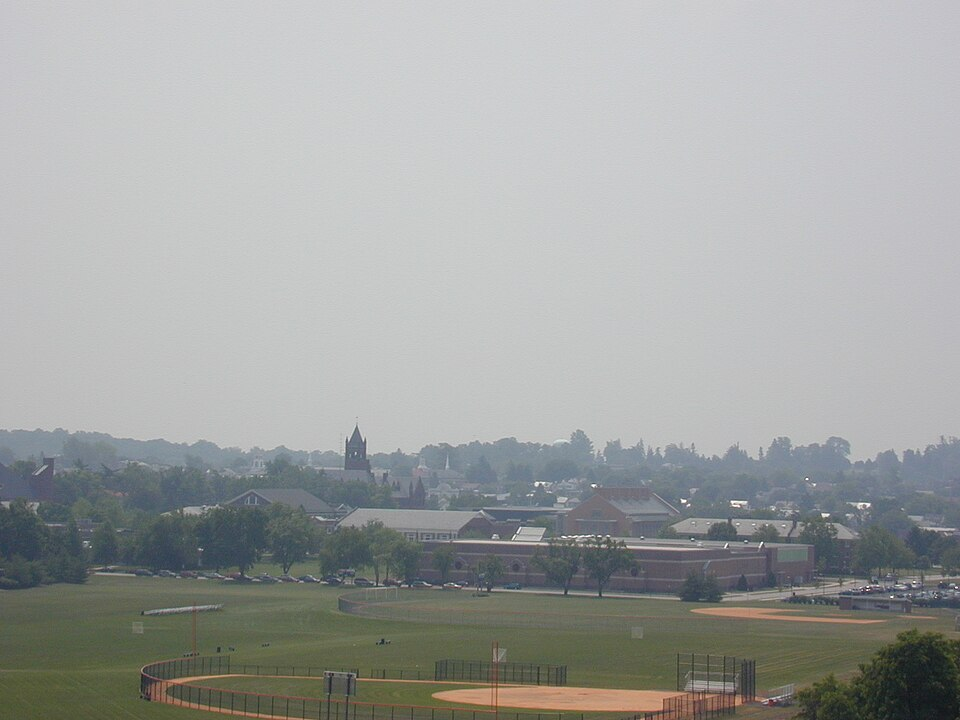
Gettysburg, PA · A historic inn dating to 1786, just off Lincoln Square and a short walk from downtown shops, restaurants and museums.
Visit The Brafferton Inn →
Gettysburg, PA · A country estate on 30 private acres a short drive from Lincoln Square, with a heated indoor pool and a full hot homemade breakfast.
Visit The Inn at White Oak →
Cape May, NJ · Restored historic homes near the beach and shops, with a buffet breakfast and afternoon tea.
Visit The Queen Victoria →
Cape May, NJ · A circa-1860 mansion with gardens in the historic district. Full breakfast is included with regular-rate, non-group stays.
Visit The Southern Mansion →
Cape May, NJ · A 27-room Victorian bed and breakfast half a block from the beach, with ocean-view porches, a gourmet breakfast and afternoon tea.
Visit Angel of the Sea →Beacon, NY · A six-room inn just off Main Street, with a hot breakfast and access to galleries, restaurants and Mount Beacon trails.
Visit Beacon Bed and Breakfast →
New Paltz, NY · A five-room country retreat with mountain views and a from-scratch breakfast, near the Shawangunk Ridge.
Visit Watergrasshill →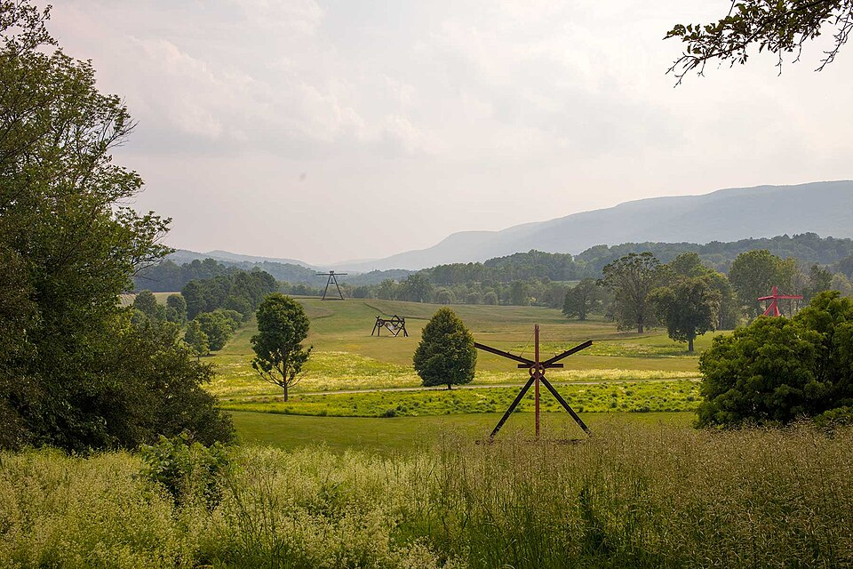
Salisbury Mills, NY · A historic country inn in the lower Hudson Valley, about five minutes from Storm King Art Center, serving a homemade three-course breakfast.
Visit Caldwell House →Images are resized and may be cropped. Except for the Sayre Mansion, photos show nearby destinations rather than the inns themselves.